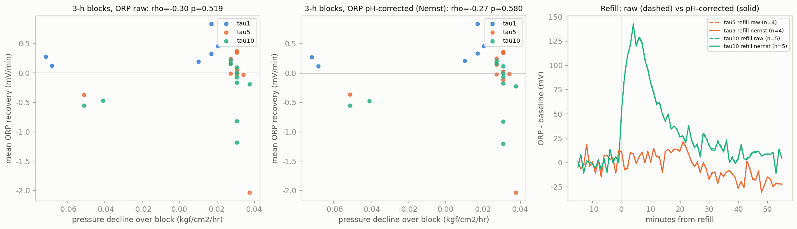

ORP 事件回落 v2：拉長時間窗、扣掉 pH 產生於 2026-10-15 21:50:58（Jetson）· 202607至08最新循環研究
結論
拉長時間窗、扣掉 pH 之後，仍沒有任何組合達到「事件特定且顯著」。ORP 回升快慢與壓力下降快慢，在這批資料裡看不出關聯——與 v1 一致，也與 2026-09-21「ORP 反映料位／操作、不是活性計」的結論一致。
補氣時 ORP 往正跳，是不是 pH 造成的？
| 訊號 | 補氣事件 | 事件後最正（中位, mV） | 事件後最負（中位, mV） | 泵開後最負（中位, mV） | ||
|---|---|---|---|---|---|---|
| 原始 ORP | 9 | +123.3 | +8.7 | -20.5 | ||
| pH 校正（Nernst 60.1 mV/pH） | 9 | +122.2 | +8.8 | -20.6 | ||
| pH 校正（實測斜率） | 9 | +123.3 | +8.7 | -20.5 |
若補氣的正跳是 CO2 帶來的酸化，pH 校正後「最正」應明顯變小、「最負」變得更負（H2 進來了）。對照右圖的虛線（原始）與實線（校正）。
ORP 回升率 vs 壓力下降率（每一組都有批次內置換、偏相關、事件前安慰劑）
| 事件 | 時間窗 | ORP 訊號 | n | ρ | p | 偏相關 ρ | p | 安慰劑 ρ | 判定 |
|---|---|---|---|---|---|---|---|---|---|
| 泵啟動 | 45分 | 原始 ORP | 145 | +0.132 | 0.664 | +0.128 | 0.310 | +0.064 | — |
| 泵啟動 | 45分 | pH 校正（Nernst 60.1 mV/pH） | 145 | +0.136 | 0.678 | +0.127 | 0.315 | +0.058 | — |
| 泵啟動 | 45分 | pH 校正（實測斜率） | 145 | +0.132 | 0.672 | +0.128 | 0.304 | +0.064 | — |
| 補氣 | 45分 | 原始 ORP | 10 | +0.091 | 0.812 | +0.289 | 0.423 | +0.006 | — |
| 補氣 | 45分 | pH 校正（Nernst 60.1 mV/pH） | 10 | +0.091 | 0.824 | +0.289 | 0.417 | -0.067 | — |
| 補氣 | 45分 | pH 校正（實測斜率） | 10 | +0.091 | 0.811 | +0.289 | 0.425 | +0.006 | — |
| 泵啟動 | 55分 | 原始 ORP | 136 | -0.022 | 0.947 | +0.054 | 0.750 | +0.059 | — |
| 泵啟動 | 55分 | pH 校正（Nernst 60.1 mV/pH） | 136 | -0.035 | 0.909 | +0.036 | 0.829 | +0.057 | — |
| 泵啟動 | 55分 | pH 校正（實測斜率） | 136 | -0.022 | 0.942 | +0.054 | 0.747 | +0.059 | — |
| 補氣 | 55分 | 原始 ORP | 9 | +0.267 | 0.562 | +0.395 | 0.320 | +0.050 | — |
| 補氣 | 55分 | pH 校正（Nernst 60.1 mV/pH） | 9 | +0.267 | 0.562 | +0.395 | 0.319 | -0.033 | — |
| 補氣 | 55分 | pH 校正（實測斜率） | 9 | +0.267 | 0.571 | +0.395 | 0.311 | +0.050 | — |
| 泵啟動 | 3小時區塊 | 原始 ORP | 27 | -0.297 | 0.519 | +0.175 | 0.397 | -0.016 | — |
| 泵啟動 | 3小時區塊 | pH 校正（Nernst 60.1 mV/pH） | 27 | -0.274 | 0.580 | +0.189 | 0.372 | -0.004 | — |
| 泵啟動 | 3小時區塊 | pH 校正（實測斜率） | 27 | -0.297 | 0.514 | +0.175 | 0.389 | -0.016 | — |
綠色＝p<0.05、偏相關 p<0.05、且比安慰劑強 0.1 以上。3 小時區塊共 27 個（同批連續 3 次泵事件）。
pH 斜率
理論（Nernst，30 °C）：−60.1 mV/pH。實測（各批一階差分的 Theil–Sen 斜率）：
- tau1：-33.3 mV/pH（2493 分鐘）
- tau5：0.0 mV/pH（2011 分鐘）
- tau10：0.0 mV/pH（3211 分鐘）
使用的實測中位斜率：0.0 mV/pH。濾掉的 pH 故障點：0 筆（5–9 以外，含 14.00）。 實測斜率若遠小於 60，代表 ORP 與 pH 的短時變化不是單純的 Nernst 關係（混合電位），Nernst 校正可能過度。
圖

限制
- ORP 回升也可能是 H2 逸散回氣相（物理）；壓力下降含物理溶解。正相關只是「相容」。
- 這裡一次看了很多組（訊號 × 時間窗 × 事件類型），單一組 p<0.05 不足為證，要看是否跨設定一致。
- 三批沒有換液，τ、菌齡、液相飽和共線。
v1 報告：ORP 事件回落 v1；原始資料：summary.json；程式：research/cycles/orp_event_decay_v2.py